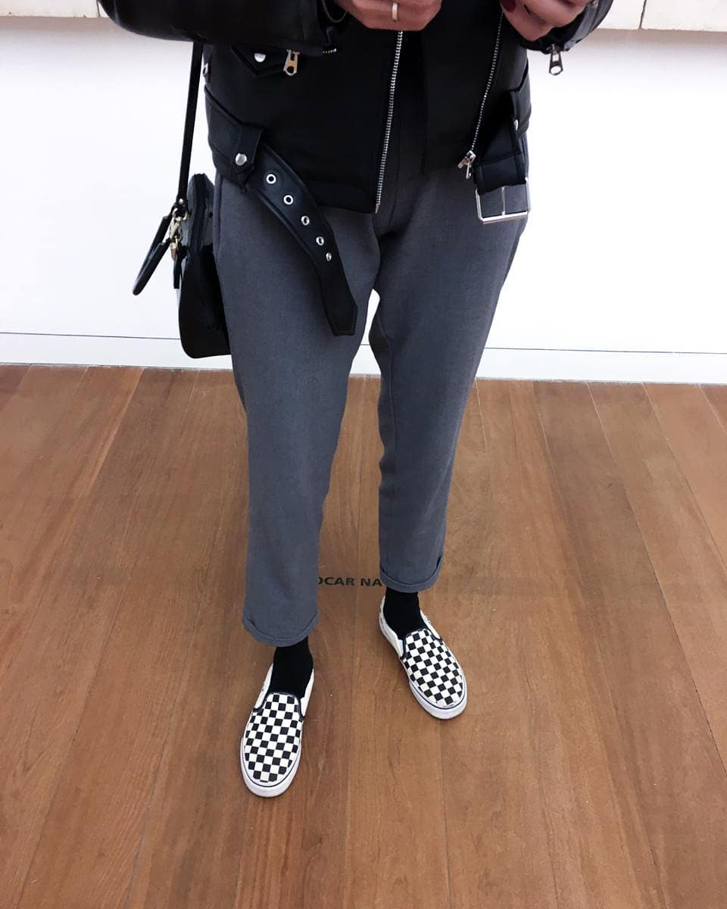
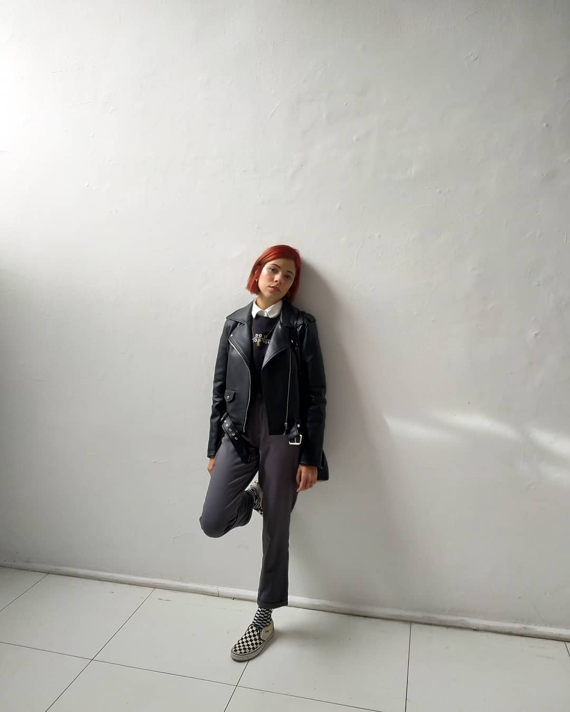
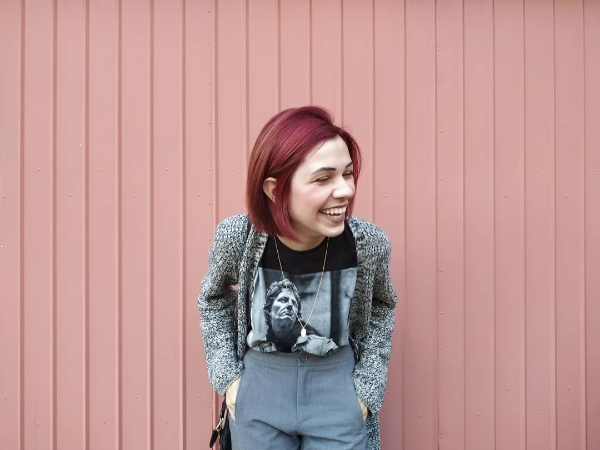
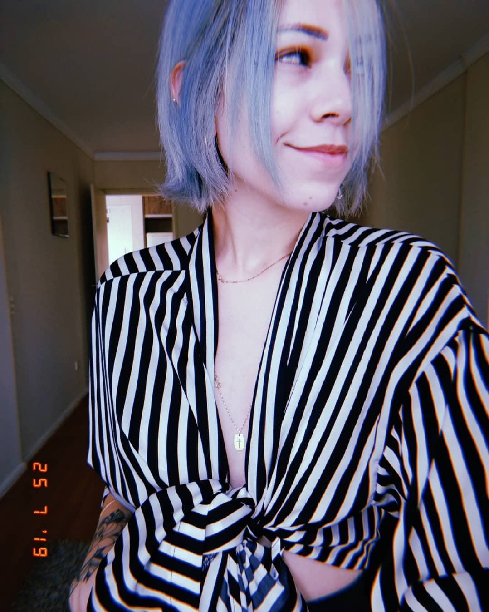

Alguns projetos com amor, carinho e qualidade.
Promovendo a divulgação de sua ideologia niilista, e, ao mesmo tempo, servindo de espelho para uma sociedade em crise, que não da voz à sua juventude.
1 DE FEVEREIRO DE 2020
A sensação de dormência é profunda e a sociedade valoriza de tal maneira o individualismo que só mesmo uma intervenção radical e, de certa forma, escandalosa será capaz de abalar as estruturas, chamando a atenção das pessoas para retirá-las do marasmo, da zona de conforto em que se encontram.
28 DE OUTUBRO DE 2019
O que vale nesse momento é uma expressão pessoal que se revelava, por meio da indumentária, e cria laços com seus semelhantes, ao mesmo tempo em que os separava violentamente dos “outros”.
11 DE SETEMBRO DE 2019
Essa postura separatista e o visual agressivo dão à vestimenta um caráter combativo e trava, no campo da moda, um diálogo ideológico. O grupo punk não quer apenas se expressar, quer também incomodar e abalar as estruturas vigentes.
25 DE JULHO DE 2019